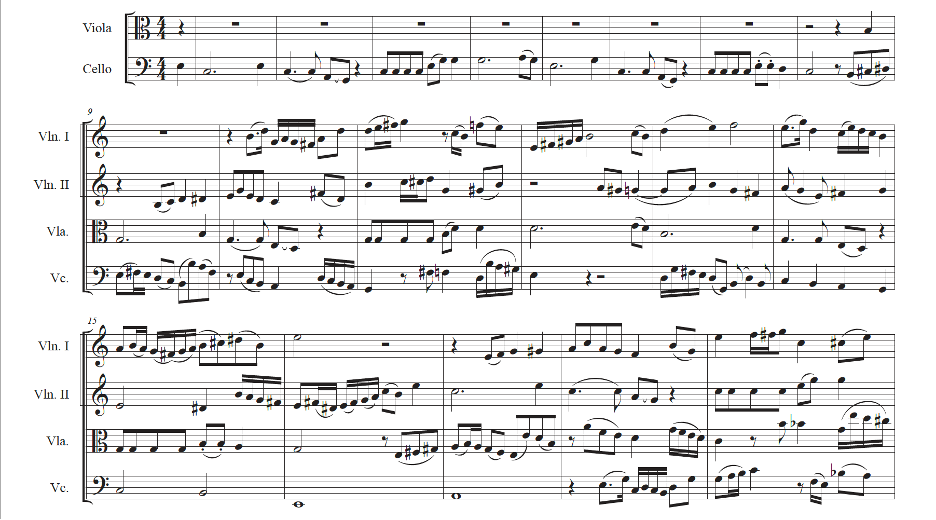
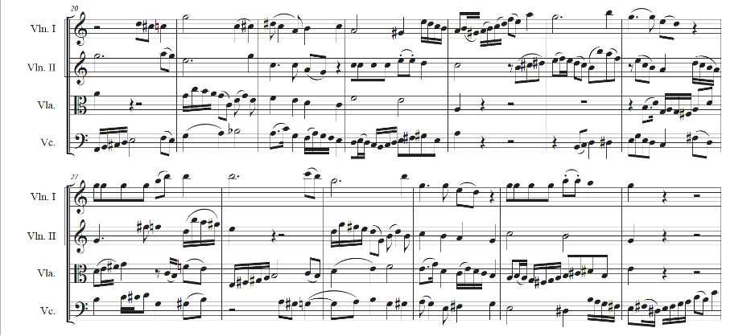
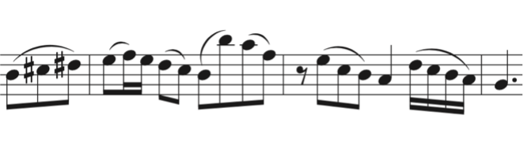
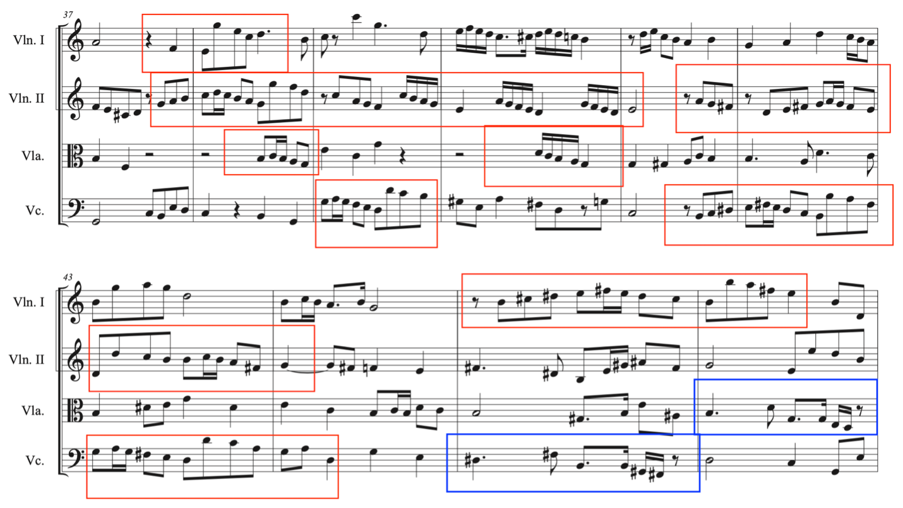
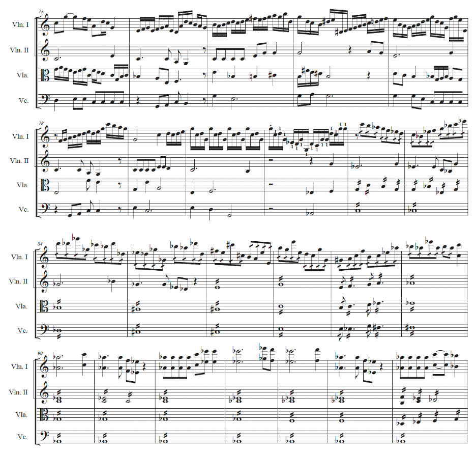

Looking into Florence B. Price’s “Five Folksongs in Counterpoint”
Florence B. Price is often cited as the first African American woman to have a large-scale work performed by a major American orchestra; an honor achieved when her Symphony in E Minor was premiered by the Chicago Symphony in 1933. She is also remembered for her art songs and spiritual arrangements. Much of the published attention surrounding Price is related to her symphonic, keyboard, and vocal works, perhaps due to the magnitude of the symphony being a “first,” the status of her Piano Sonata in E Minor as award-winning, and her vocal works’ attachment to Marian Anderson. Even though there has been a growing interest in Price’s work over the last ten-to-fifteen years, there is still relatively little written about her instrumental chamber works.
One reason for this neglect is the until recent scarcity of extant scores. While she received acclaim for her first symphony, her Sonata in E Minor, art songs, and spiritual arrangements, she struggled to get many of her works performed or published. Because of this, many of her works were not saved for posterity and have gone missing. Were it not for the 2009 discovery of a treasure-trove of scores in Price’s former home, and the University of Arkansas Libraries Special Collections’ acquisition of Price’s papers (including journals and manuscripts), much more of Price’s music would have been lost forever.[1]
Among the recently rediscovered scores in the Florence B. Price collection is Five Folksongs in Counterpoint. According to the manuscript, the piece was completed in 1951, within two years of Price’s death, though it is unclear when each of the movements was written. In program notes for a score that was edited and sold by the Apollo Chamber Players, Price biographer Linda Rae Brown explained that the string quartet could have been started as early as the 1920s, and erasures on the score indicate that it went through at least one name change.[2] Since the piece was finalized so late in her life, it offers a perspective of what Price sought to convey in her music at the end of her career. The potential that it was composed over the course of thirty years (or completed and edited), makes Five Folksongs in Counterpoint an interesting piece in which to analyze Florence Price’s compositional style for chamber works.
The aim of this study is to review Five Folksongs in Counterpoint as representative of Price’s compositional identity and reflective of her intersectionality as a southern-born, New England Conservatory-trained African American woman. Rather than emphasize whether or not this represents an important piece of American music, I aim to see how this work can exemplify an individual Florence B. Price compositional style.
Five Folksongs in Counterpoint is a string quartet in five movements, each of which is based on a different folksong. Three of the movements are based on African American spirituals: “Calvary,” “Shortnin’ Bread,” and “Swing Low, Sweet Chariot.” The original score shows that Five Folksongs in Counterpoint was once titled Five Negro Folksongs in Counterpoint but was likely changed with the addition of “Clementine” and “Drink to Me Only With Thine Eyes,” two folksongs that are not of African American derivation.[3]
The use of spirituals was a staple in Price’s compositional oeuvre throughout her career, and the use of spirituals and spiritual-like melodies in her symphonies and piano works has been noted by several scholars.[4] When she attended the New England Conservatory as a teenager, she “had become familiar with the use of vernacular elements in serious composition through her studies with George Chadwick.”[5] It was at the conservatory that she likely studied the work of other composers that made use of African American folksong and spirituals in their work, notably Antonín Dvořák. Writing about Symphony in E Minor, Price’s first symphony which was written while she was a student, Rae Linda Brown notes that:
Dvořák’s and Price’s symphonies are in the key of E Minor and both works have subtitles that suggest the inspiration for their primary source material. Originally subtitled the “Negro Symphony,” Price’s work assimilates characteristic Afro-American folk idioms into classical structures.[6]
The influence of Dvořák has also been noted by at least one reviewer of Five Folksongs in Counterpoint who said it “evoked Dvořák’s famed ‘American’ Quartet.”[7] In his oft-cited article, “The Real Values of Negro Melodies,” Antonin Dvořák stated “I am convinced that the future music of this country must be founded on what are called Negro melodies. These can be the foundation of a serious and original school of composition, to be developed in the United States.”[8] This call for an American nationalist musical identity resonated with Price whose compositional identity appears entwined with black nationalist ideals influenced by the New Negro Movement.[9]
The aspiration for cultural expression in perceived high art associated with the New Negro Movement may be the cause of the telling absence of blues influence in Price’s Five Folksongs in Counterpoint. Figures like Mahalia Jackson have shaped a tradition of substantial use of blues inflections when singing spirituals. This influence is so strong that Price’s relative absence in this instance emphasizes her individuality. It is also interesting that she avoided the influence of jazz given the time she moved to Chicago in 1927. In the late 1920s, Chicago was an important hub for jazz. Louis Armstrong was still based in Chicago and recording some of his seminal work with The Hot Five and The Hot Seven, and Jelly Roll Morton recording with his Red Hot Peppers. Given the city’s vibrant jazz scene at the time and Price’s commitment to including African American influences in her music, it is striking that Price managed to evade a more direct influence. While this shows her individuality, it may also be revealing of Price’s past and her intersectionality as a high-class African American woman. Today, jazz is seen by many as an intellectual music, but in the 1920s it was not seen as highbrow, and the genre’s history is rife with anecdotes of musicians—especially those with privileged backgrounds—who were discouraged from performing jazz. James DeJongh contextualized the view many African American elites’ of jazz and blues:
We may have to remind ourselves that Hughes’s identification of Harlem with jazz and blues, which now seems so natural—perhaps even a bit trite—was severely criticized by black authority figures and rejected in its own time… The spirituals had come to be accepted by the Negro elite as dignified and ennobling folk forms, but blues and jazz were embarrassing reminders of a status they were trying to escape.[10]
With its lack of blues and jazz characteristics, Five Folksongs in Counterpoint reveals that Price sought to elevate the spiritual and African American folksong through the lens of the post-Romanticism of western art music.
Florence Price attended the New England Conservatory from 1903 to 1906, a program that would encourage Price to use vernacular music when composing in the western art tradition. While Price was at the conservatory, it was headed by George Whitefield Chadwick, the institution’s third director who served that role from 1897 to 1931. At Chadwick’s direction, “the school continued to raise its musical standards to such an extent that it was ‘probably the most severe of any music school in the country.’”[11] As Rae Linda Brown noted,
Chadwick moved quickly to raise the academic standard of the Conservatory. He modified the curriculum from its earlier emphasis on singing and piano playing to one that stressed harmony, counterpoint theory and analysis, and composition. In keeping with Chadwick’s aim to establish a first-rate American music school, he developed his own harmony book, Harmony: A Course of Study (published in 1897), for class use. He explained, “I was ambitious to make the book a model of expression, most of the books on Harmony being more or less poor translations from the German.”[12]
Under Chadwick’s instruction, Price honed her compositional craft, and it was here that she created some of her earliest amalgamations of western art music and African American spirituals and folksongs.
The final movement of Five Folksongs in Counterpoint is “Swing Low, Sweet Chariot.” This movement shows Price taking the iconic pentatonic melody, and masterfully developing it along with new material, and gradually building the intensity resulting in a powerful piece that is telling of Price’s various identities.
In the first thirty-two measures of this movement (example 1) each instrumentalist, in turn, plays faithful renditions of the melody for eight measures, starting with the cello playing in C, the viola a fifth higher—in G, the second violin a fourth higher in C, and finally the first violin playing a fifth above that. The cello plays the melody unaccompanied with all of the parts joining in measure nine as the viola takes the melody. A look at the score for the movement’s opening shows that the melody is not the only shared material. Comparing the parts, it is clear that Price has used the melody of “Swing Low, Sweet Chariot” as the basis for thirty-two measure canon capable of being repeated and still maintaining its cohesiveness.


In the following section, Price departs from the familiar tune and instead develops themes and motives from the other parts of the canon, concealing melodic fragments of the original spiritual. Price’s choice to use her own thematic material as the primary focus for development rather than the melody of “Swing Low, Sweet Chariot” reinforces that this is not simply a rendition or arrangement of a spiritual, but a Florence Price composition based off of a spiritual. One example of thematic development of an accompanying part is in measures thirty-seven to forty-six. Price takes a motive heard first by the cello from measures eight to eleven, the viola in measures sixteen to nineteen, and the second violin in measures twenty-four to twenty-seven.

The original theme (example 2) starts with ascending eighth notes that imply a B7 chord on the last two beats of measure eight which lead to a descending E minor figure on measure nine. The motive includes a few characteristics that will be developed later in the piece: an upper neighbor figure followed by a descending line, an octave leap, and a descending sixteenth note figure ending on a quarter note.

Example 3 shows exactly how Price uses this theme from measures thirty-seven to forty-six. It is first heard in full by the second violin player, playing in C major. Price then sequences the last two beats of the motive, moving down by step with each repetition. Two beats after the second violin plays the upper neighbor figure in measure thirty-eight it is played by the viola, followed by the cello in measure thirty-nine. Price uses this theme in every part, either in its entirety or fragmented until measure forty-six. Additionally, the original melody appears briefly in the cello part measure forty-five, and in the viola in measure forty-six.

In measure seventy-three the main theme returns—in C Major—in the second violin part, with segments of the melody also appearing in the cello part. The first violin plays a driving sixteenth note accompanying line, which seems to deceptively imply the ending of the movement at measure eighty. Price instead creates an exciting drive towards the end of the piece by having the first violin come in alone with a tremolo eighth note line while the second violin fragments the theme in a variety of keys including E-flat major and G-flat major. For the melody’s return, Price no longer adheres to the canon, and the other parts play tremolos of varying length (whole notes in the cello, quarter notes in the viola, and eighth notes in the first violin). Building even more, the first violin, in double stops, plays the melody in A-flat. The melody continues to cycle through different keys before finally settling back to C major at the end.
In this piece, Price reflects her own duality as an African American woman and a conservatory-trained composer navigating a musical idiom, western art music, that has a historic disregard for both Black and female composers. In a letter to Serge Koussevitzky, she explains her music as an attempt to do just this:
Having been born in the South and having spent most of my childhood there I believe I can truthfully say that I understand the real Negro music. In some of my work I make use of the idiom undiluted. Again, at other times it merely flavors my themes. And at still other times thoughts come in the garb of the other side of my mixed racial background. I have tried to for practical purposes to cultivate and preserve a facility of expression in both idioms, although I have an unwavering and compelling faith that a national music very beautiful and very American can come from the melting pot just as the nation itself has done.[13]
The instrumentation, the traditional harmony, the looseness of the form, the contrapuntal texture, and her sense of nationalism are all traits commonly associated with romantic composers and can be viewed as an expression of her identity as a conservatory-trained composer. Her dedicated use of the spiritual, “undiluted” in this case, as the source of national representation, an expression of her identity as an African American woman.
The written histories of western art music have, for the most part, reflected the works of white men. Reviewing the history of western art music specific to the United States, one finds a similar focus on white male composers. As with other countries with a colonial past, the United States has a history of not recognizing the achievements of marginalized people, and African American women in particular have been left out in several areas of American history.[14]Florence Price recognized the stereotypes she had to combat in gaining recognition for her work. After one of the most often-cited achievements of her career, the Chicago Symphony performance of her first symphony in 1933 as part of a program of all-African American compositions, several of the journalists who reviewed the concert either failed to mention Price, or mentioned her in passing between praise for the male contributors.[15]One problematic view Judith Tick points out in her analysis of turn-of-the-century views of women in music is that “musical creativity was… masculine by definition because it relied on male intellectual and psychological resources.”[16] In her article, Tick is responding to a book that was published during Price’s formative years and was written by a prominent music critic, not some fringe personality. Tick also explains ideas of femininity in regard to music:
Femininity in music was alleged to be delicate, graceful, refined, and sensitive. It was defined as the eternal feminine…(ewige weibliche)… Through 1900 the aesthetics of the eternal feminine in music included both form and style, as well as emotive content… Vocal music was the essence of ewige weibliche because it “appeals more directly to the heart.” Since harmony and counterpoint were “logical,” they were alien to femininity.[17]
Florence Price spent her career fighting these preconceived notions of her music. In 1943, Price sent a letter to conductor Serge Koussevitzky of the Boston Symphony advocating for her work in the hopes that Koussevitzky would add one of her pieces to his program. These letters did not bear fruit, but the language Price uses in the beginning of her letter shows that she knew how her scores may be received:
To begin with I have two handicaps—those of sex and race. I am a woman; and I have some Negro blood in my veins. Knowing the worst, then, would you be good enough to hold in check the possible inclination to regard a woman’s composition as long on emotionalism but short on virility and thought content;—until you shall have examined some of my work?
As to the handicap of race, may I relieve you by saying that I neither expect nor ask any concession on that score. I should like to be judged on merit alone—the great trouble having been to get conductors, who know nothing of my work (I am practically unknown in the East, except perhaps as the composer of two songs, one or the other of which Marian Anderson includes on most of her programs) to even consent to examine a score.[18]
While Price did write vocal music, and found much success doing so, she continued writing in idioms stereotypically considered to be “intellectual” like the symphony or string quartet. In doing so, Price is put herself in direct opposition with these harmful stereotypes, and demanded the musical establishment judge her by her work. In this context, the choice to title her string quartet Five Folksongs in Counterpoint is telling of Price’s uncompromising compositional identity considering, to Teal’s point, counterpoint was viewed as too “logical” to be considered feminine.
The final comparison to be drawn between Florence B. Price and Five Folksongs for Counterpoint is their virtual disappearance. Florence Price’s name does not grace the pages of many music history books including Burkholder, Grout, and Palisca’s A History of Western Music, Kyle Gann’s American Music in the Twentieth Century, or John Henry Mueller’s The American Symphony Orchestra: A Social History of Musical Taste, a book published the year Five Folksongs for Counterpoint was completed.
Much like Price herself, Five Folksongs for Counterpoint was forgotten for decades. The score was found in Price’s abandoned St. Anne, IL home, “strewn all over the floor” with other lost compositions that had gone unheard. [19]
[1] Florence Price, “ArchivesSpace at the University of Arkansas,” Collection: Florence Beatrice Smith Price Papers Addendum | ArchivesSpace at the University of Arkansas, accessed December 7, 2020,https://uark.as.atlas-sys.com/repositories/2/resources/1522.
The University of Arkansas bought the manuscripts from Price’s daughter in 2010. In 2018, it was announced that G. Schirmer had purchased the worldwide distribution rights of Price’s entire catalog. Among the formally missing pieces were Price’s fourth symphony, several orchestral works including Colonial Dance and Songs of the Oak, two violin concertos, and her Piano Concerto in One Movement.
[2] Mounir Nessim, “Five Folksongs in Counterpoint by Florence Price,” Mounir Nessim viola (Mounir Nessim viola, July 15, 2020), https://nessimviola.com/blog/five-folksongs-in-counterpoint-by-florence-price.
[3] Rae Linda Brown, Guthrie P. Ramsey, and Carlene J. Brown, The Heart of a Woman: the Life and Music of Florence B. Price (Urbana: University of Illinois Press, 2020), 231.
[4] Rae Linda Brown has included this point in several of her writings on Price including her book The Heart of a Woman and the program notes she contributed to G. Schirmer’s publication of Price’s Sonata in E Minor for Piano. It is also mentioned in an article by Helen Walker-Hill, “Black Women Composers in Chicago: Then and Now,” Black Music Research Journal 12, no. 1 (1992). Several dissertations and theses have cited the use of spirituals including A Study of the Lives and Works of Five Black Women Composers in America by Mildred Denby Green (1975), A Stylistic Comparative Analysis of Selected Art Songs by Florence Price and Margaret Bonds by Meng-Chieh (Mavis) Hsieh (2019).
[5] Brown, The Heart of a Woman: the Life and Music of Florence B. Price, 128.
[6] Ibid, 128.
[7] Tim Sawyier, “Chicago Classical Review,” Chicago Classical Review RSS, September 5, 2019, https://chicagoclassicalreview.com/2019/09/florence-price-work-provides-a-highlight-with-nexus-chamber-music/.
[8] Meng-Chieh Mavis Hsieh, “A Stylistic and Comparative Analysis of Selected Art Songs by Florence Price and Margaret Bonds” (dissertation, n.d.).
[5] Brown, The Heart of a Woman: the Life and Music of Florence B. Price, 127.
[10] James De Jongh, Vicious Modernism: Black Harlem and the Literary Imagination (New York, NY: Cambridge Univ. Press, 2010).
[11] Edward John FitzPatrick, “The Music Conservatory in America” (dissertation, 1963).
[12] Brown, The Heart of a Woman: the Life and Music of Florence B. Price, 56.
[13] Brown, The Heart of a Woman: the Life and Music of Florence B. Price, 186.
[14] Christopher Lebron, “The Invisibility of Black Women,” June 27, 2019, http://bostonreview.net/race-literature-culture-gender-sexuality-arts-society/christopher-lebron-invisibility-black-women.
[15] Brown, The Heart of a Woman: the Life and Music of Florence B. Price, 116-118.
[16] Jane M. Bowers and Judith Tick, “Passed Away Is the Piano Girl,” in Women Making Music: the Western Art Tradition, 1150-1950 (Urbana: University of Illinois Press, 1987), pp. 325-348.
[17] Ibid.
[18] Brown, The Heart of a Woman: the Life and Music of Florence B. Price, 186.
[19] Karen Tricot Steward, “After Lost Scores Are Found In Abandoned House, Musicians Give Life To Florence Price's Music,” KUAR, accessed December 16, 2020, https://www.ualrpublicradio.org/post/after-lost-scores-are-found-abandoned-house-musicians-give-life-florence-prices-music.
Berg, Gregory. 2013. "My Dream: Art Songs and Spirituals by Florence Price." Journal of Singing 69 (3) (Jan): 385-386. https://login.lp.hscl.ufl.edu/login?url=https://www.proquest.com/scholarly-journals/my-dream-art-songs-spirituals-florence-price/docview/1270666471/se-2?accountid=10920.
“Biography.” Florence Price. Accessed December 14, 2020. http://www.florenceprice.org/new-page-1.
Bowers, Jane M., and Judith Tick. “Passed Away Is the Piano Girl.” Essay. In Women Making Music: the Western Art Tradition, 1150-1950, 325–48. Urbana: University of Illinois Press, 1987.
Brown, Rae Linda. "Price [née Smith], Florence Bea(trice)." Grove Music Online. 30 Mar. 2020; Accessed 24 Oct. 2020. https://www.oxfordmusiconline.com/grovemusic/view/10.1093/gmo/9781561592630.001.0001/omo-9781561592630-e-90000367402.
Brown, Rae Linda, Guthrie P. Ramsey, and Carlene J. Brown. The Heart of a Woman: The Life and Music of Florence B. Price. Urbana: University of Illinois Press, 2020.
Brown, Rae Linda. "The Woman's Symphony Orchestra of Chicago and Florence B. Price's Piano Concerto in One Movement." American Music 11, no. 2 (1993): 185-205. Accessed November 2, 2020. doi:10.2307/3052554.
Carter, Marquese. “The Poet and Her Songs: Analyzing the Art Songs of Florence B. Price,” 2018.
Cooper, Michael. “A Rediscovered African-American Female Composer Gets a Publisher.” The New York Times. The New York Times, November 15, 2018. https://www.nytimes.com/2018/11/15/arts/music/florence-price-music-publisher-schirmer.html.
De Jongh, James. Vicious Modernism: Black Harlem and the Literary Imagination. New York, NY: Cambridge Univ. Press, 2010.
Douglas Shadleon February 20, 2019. “Plus Ça Change: Florence B. Price in the #BlackLivesMatter Era.” NewMusicBox, February 20, 2019. https://nmbx.newmusicusa.org/plus-ca-change-florence-b-price-in-the-blacklivesmatter-era/.
Ege, Samantha. "Florence Price and the Politics of her Existence.”." Kapralova Society Journal: A Journal of Women in Music 16 (2018): 1-10.
Fabre Geneviève, and Michel Feith. Temples for Tomorrow: Looking Back at the Harlem Renaissance. Bloomington, IN: Indiana University Press, 2001.
FitzPatrick, Edward John. “The Music Conservatory in America,” 1963.
Hine, Darlene Clark, John McCluskey, and Marshanda A. Smith, eds. The Black Chicago Renaissance. Urbana, Chicago; Springfield: University of Illinois Press, 2012. Accessed December 8, 2020. http://www.jstor.org/stable/10.5406/j.ctt1hd18gg.
Hsieh, Meng-Chieh Mavis. “A Stylistic and Comparative Analysis of Selected Art Songs by Florence Price and Margaret Bonds,” 2019.
Howland, John. "Jazz Rhapsodies in Black and White: James P. Johnson's.
"Yamekraw"." American Music 24, no. 4 (2006): 445-509. Accessed November 2, 2020. doi:10.2307/25046051.
Jackson, Barbara Garvey. "Florence Price, Composer." The Black Perspective in Music 5, no. 1. (1977): 31-43. Accessed November 2, 2020. doi:10.2307/1214357.
Lambert, John W. “The Price Is Right for Priceless as Florence Price Emerges from the Shadows at Duke.” CVNC, September 21, 2019. https://cvnc.org/article.cfm?articleId=9550.
Langley, Allan Lincoln. "Chadwick and the New England Conservatory of Music." The Musical Quarterly 21, no. 1 (1935): 39-52. http://www.jstor.org/stable/738964.
Lebron, Christopher. “The Invisibility of Black Women,” June 27, 2019. http://bostonreview.net/race-literature-culture-gender-sexuality-arts-society/christopher-lebron-invisibility-black-women.
Maxile, Horace J. "Signs, Symphonies, Signifyin(G): African-American Cultural Topics as Analytical Approach to the Music of Black Composers." Black Music Research Journal 28, no. 1 (2008): 123-38. Accessed November 2, 2020. http://www.jstor.org/stable/25433797.
Murchison, Gayle. "Current Research Twelve Years after the William Grant Still Centennial." Black Music Research Journal 25, no. 1/2 (2005): 119-54. Accessed November 3, 2020. http://www.jstor.org/stable/30039288.
“Music.com: Florence Price: ‘Five Folksongs in Counterpoint.’” Classical, November 11, 2018. https://africlassical.blogspot.com/2018/11/classical-musiccom-florence-price-five.html.
Nash, Jennifer C. “Re-Thinking Intersectionality.” Feminist Review 89, no. 1 (June 2008): 1–15. https://doi.org/10.1057/fr.2008.4.
Nahum, Daniel Brascher. 1933. "Roland Hayes Concert shows Progress of Race in Music." The Chicago Defender (National Edition) (1921-1967), Jun 24, 11. https://login.lp.hscl.ufl.edu/login?url=https://www-proquest-com.lp.hscl.ufl.edu/historical-newspapers/roland-hayes-concert-shows-progress-race-music/docview/492352126/se-2?accountid=10920.
Nessim, Mounir. “Five Folksongs in Counterpoint by Florence Price.” Mounir Nessim viola. Mounir Nessim viola, July 15, 2020. https://nessimviola.com/blog/five-folksongs-in-counterpoint-by-florence-price.
Price, Florence. “ArchivesSpace at the University of Arkansas.” Collection: Florence Beatrice Smith Price Papers Addendum | ArchivesSpace at the University of Arkansas. Accessed December 7, 2020. https://uark.as.atlas-sys.com/repositories/2/resources/1522.
Sawyier, Tim. “Chicago Classical Review.” Chicago Classical Review RSS, September 5, 2019. https://chicagoclassicalreview.com/2019/09/florence-price-work-provides-a-highlight-with-nexus-chamber-music/.
Smith, Bethany Jo. “Song to the Dark Virgin: Race and Gender in Five Art Songs of Florence B. Price,” 2007.
Steward, Karen Tricot. “After Lost Scores Are Found In Abandoned House, Musicians Give Life To Florence Price's Music.” KUAR. Accessed December 16, 2020. https://www.ualrpublicradio.org/post/after-lost-scores-are-found-abandoned-house-musicians-give-life-florence-prices-music.
Walker-Hill, Helen. "Discovering The Music Of Black Women Composers." American Music Teacher 40, no. 1 (1990): 20-63. Accessed November 3, 2020. http://www.jstor.org/stable/43542379.
Walker, Ryan Thomas. 2015. "Lessons in Musical Excellence: The Pedagogical Contributions of George Whitefield Chadwick." Order No. 10131862, University of South Dakota. https://login.lp.hscl.ufl.edu/login?url=https://www.proquest.com/dissertations-theses/lessons-musical-excellence-pedagogical/docview/1810422312/se-2?accountid=10920.